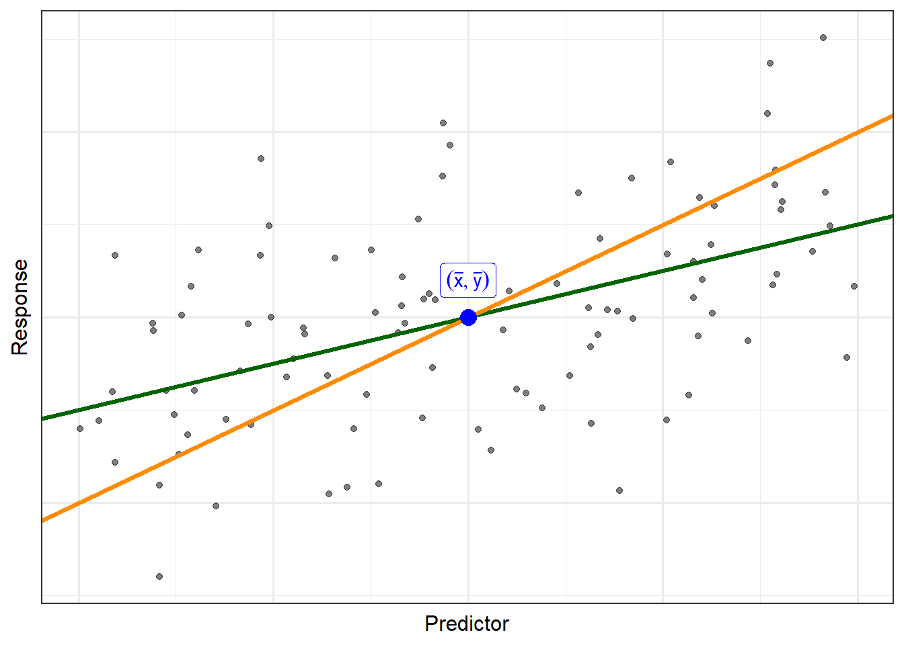

10 General Linear Hypothesis Test
We previously discussed a model for the sampling distribution of the parameter estimates (Definition 4.8) that allows for making inference on individual parameters; that is, we can test hypotheses of the form
\[H_0: \beta_j = 0 \qquad \text{vs.} \qquad H_1: \beta_j \neq 0.\]
However, we do not yet have a way of testing more complex hypotheses that occur regularly in scientific research. For example, testing whether the response is associated a categorical predictor involves determining if there is evidence that any of the coefficients associated with the indicator variables differs from zero. Such simultaneous tests fall under the General Linear Hypothesis framework.
While we write hypotheses as statements about parameters, we should keep in mind that they are really comparisons of alternative models for the response.
Big Idea
Hypothesis testing is a way of determining if a simpler model (under the null hypothesis) is sufficient for explaining the variability in the response or if a more complex model (under the alternative hypothesis) is necessary. The simpler model is the result of placing constraints on the complex model.
Statistical inference then allows us to determine if we can discern the difference between data generated under the simpler model and that observed. That is, we seek evidence that a more complex model is needed to capture the observed variability.
The vast majority of scientific questions can be framed as a hypothesis which places a constraint on a more complex model for the data generating process. These constraints can in turn often be written as a linear combination of the parameters.
Note
For those less familiar with matrix algebra, a linear combination simply a sum of parameters that have been multiplied by constants. We can write a linear combination as the product of two vectors, and a series of linear combinations is the product of a matrix and a vector. Let \(\mathbf{K}\) be a 2-by-3 matrix defined as
\[\mathbf{K} = \begin{pmatrix} K_{1,1} & K_{1,2} & K_{1,3} \\ K_{2,1} & K_{2,2} & K_{2,3} \end{pmatrix}.\]
Let \(\boldsymbol{\beta}\) be a column vector of length 3 defined as
\[\boldsymbol{\beta} = \begin{pmatrix} \beta_1 \\ \beta_2 \\ \beta_3 \end{pmatrix}.\]
The product \(\mathbf{K} \boldsymbol{\beta}\) is defined as
\[\mathbf{K}\boldsymbol{\beta} = \begin{pmatrix} K_{1,1} \beta_1 + K_{1,2} \beta_2 + K_{1,3} \beta_3 \\ K_{2,1} \beta_1 + K_{2,2} \beta_2 + K_{2,3} \beta_3 \end{pmatrix}\]
which is a vector of length 2. Each element in \(\mathbf{K}\boldsymbol{\beta}\) is a linear combination of the elements of \(\boldsymbol{\beta}\).
Definition 10.1 (General Linear Hypothesis) The general linear hypothesis framework refers to testing hypotheses of the form
\[H_0: \mathbf{K}\boldsymbol{\beta} = \mathbf{m} \qquad \text{vs.} \qquad H_1: \mathbf{K}\boldsymbol{\beta} \neq \mathbf{m}\]
where
- \(\boldsymbol{\beta}\) is the \((p+1)\)-length vector of the parameters (includes the intercept),
- \(\mathbf{K}\) is an \(r\)-by-\((p+1)\) matrix that specifies the linear combinations defining the hypothesis of interest, and
- \(\mathbf{m}\) is a vector of length \(r\) specifying the null values, the value of each linear combination under the null hypothesis (often a vector of 0’s).
Before discussing inference for this hypothesis, we discuss the most common use of this framework. Consider the following linear model:
\[(\text{Response})_i = \beta_0 + \beta_1 (\text{Predictor 1})_i + \beta_2 (\text{Predictor 2})_i + \varepsilon_i.\]
Suppose we are interested in testing the following hypotheses:
\[H_0: \beta_1 = \beta_2 = 0 \qquad \text{vs.} \qquad H_1: \text{At least one } \beta_j \text{ not equal to 0}.\]
To express this in the general linear hypothesis framework, we must identify the matrix \(\mathbf{K}\) and the vector \(\mathbf{m}\). To do this, note that we can rewrite the null hypothesis as
\[ \begin{aligned} H_0: & \beta_1 = 0 \qquad \text{and} \\ & \beta_2 = 0. \end{aligned} \]
Now, we identify the parameter vector as
\[\boldsymbol{\beta} = \begin{pmatrix} \beta_0 \\ \beta_1 \\ \beta_2 \end{pmatrix}.\]
There are actually several choices for \(\mathbf{K}\), but we select the most straight-forward that corresponds to how we rewrote the null hypothesis:
\[\mathbf{K} = \begin{pmatrix} 0 & 1 & 0 \\ 0 & 0 & 1 \end{pmatrix} \qquad \text{with} \qquad \mathbf{m} = \begin{pmatrix} 0 \\ 0 \end{pmatrix}.\]
That is, the null hypothesis above can be stated as
\[H_0: \begin{pmatrix} 0 & 1 & 0 \\ 0 & 0 & 1 \end{pmatrix} \boldsymbol{\beta} = \begin{pmatrix} 0 \\ 0 \end{pmatrix}.\]
Notice that each row of this hypothesis corresponds to one of the equalities expressed in the original statement of this hypothesis.
Note
When developing the matrix \(\mathbf{K}\), the number of rows corresponds to the number of equal signs in the null hypothesis.
The general linear hypothesis allows us to say something about multiple parameters (or combinations of parameters) simultaneously. Each linear combination is not a separate hypothesis; together, they form a “joint” hypothesis. That is, we should think of each linear combination defined by the rows of \(\mathbf{K}\) as “and” statements; we want every statement to be true at the same time. The framework is extremely flexible and can be used across several types of statistical models. It allows us to write the hypotheses compactly, mostly for communicating them to a computer. However, the framework alone does not produce p-values for such tests. In order to obtain a p-value, we need a model for the null distribution.
As the hypothesis involves many parameters, we cannot (and should not) test each statement separately. To fully understand that statement requires a background in statistical theory. We hand-wave this by saying that our parameter estimates are related. This is somewhat intuitive. Imagine trying to develop a line that runs through a cloud of points (see Figure 10.1); if we constrain the line to go through the “middle” of the data (the point represented by the average of the predictor and the average of the response), then changing the slope of the line will necessarily change the intercept of the line. We extend this intuition by claiming that the estimate of one coefficient is related to the estimate of the other parameters in a model.
We know that the standard error is a measure of the variability in an estimate; we could just as easily use the variance (the square of the standard error). A convenient measure of the relationship between the estimates is known as the covariance. We then store all the information about how the parameter estimates vary and co-vary in the variance-covariance matrix.
Definition 10.2 (Variance-Covariance Matrix) Let \(\boldsymbol{\beta}\) represent the \((p+1)\)-length vector of the parameters and \(\widehat{\boldsymbol{\beta}}\) represent the \((p+1)\) vector of the parameter estimates. The variance-covariance matrix of the parameter estimates is the \((p+1)\)-by-\((p+1)\) matrix \(\boldsymbol{\Sigma}\) where
- the \(j\)-th diagonal element contains \(Var\left(\widehat{\beta}_j\right)\), and
- the \((i,j)\)-th element contains the covariance between \(\widehat{\beta}_i\) and \(\widehat{\beta}_j\).
The variance-covariance matrix is an extremely important concept in statistical theory; here, we simply note that it contains information on the structure of how the estimates are related to one another. We further note that this is computed automatically in most software. We are now in a place to discuss inference for the general linear hypothesis.
Definition 10.3 (Model for the Null Distribution with the General Linear Hypothesis) Let \(\widehat{\boldsymbol{\beta}}\) be the \((p+1)\) vector of estimates for the parameter vector \(\boldsymbol{\beta}\), and let the estimates have variance-covariance matrix \(\boldsymbol{\Sigma}\). Assuming the null hypothesis
\[H_0: \mathbf{K} \boldsymbol{\beta} = \mathbf{m}\]
is true, under the conditions of the classical regression model (Definition 4.3)
\[(1/r) \left(\mathbf{K}\widehat{\boldsymbol{\beta}} - \mathbf{m}\right)^\top \left(\mathbf{K}\widehat{\boldsymbol{\Sigma}}\mathbf{K}^\top\right)^{-1} \left(\mathbf{K}\widehat{\boldsymbol{\beta}} - \mathbf{m}\right) \sim F_{r, n-p-1}.\]
As with previous results about the sampling and/or null distribution, the specifics of the above result are not as important as understanding there exists a standardized statistic for which the null distribution can be modeled explicitly, as an F-distribution with \(r\) numerator degrees of freedom and \(n-p-1\) denominator degrees of freedom, and that this model depends on specific conditions. While the denominator degrees of freedom are associated with the scaling term for the residual variance estimate, the numerator degrees of freedom are associated with the complexity of the hypothesis (the number of rows of \(\mathbf{K}\)).
While the theory that provides the above results holds only for the linear model under the classical regression model, the approach we have outlined here will allow us to provide general results which are applicable under many types of regression models.